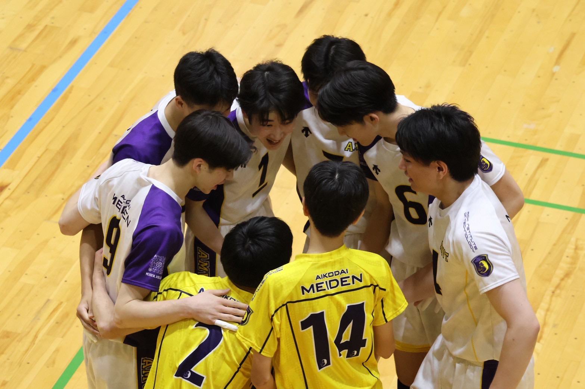
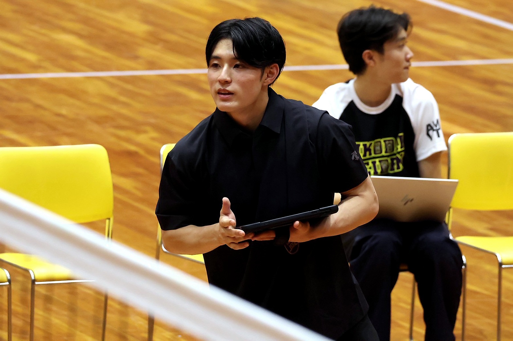
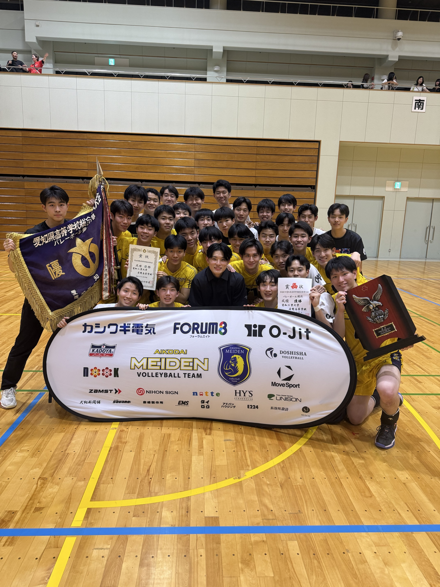

バレー引退後の人生は長い
競技生活はいつか終わります。高校3年間は、その先の人生を豊かにする力も育てる期間です。
AIT MEIDEN MEN'S VOLLEYBALL TEAM
競技・学習・生活・大学進学を一体で設計する育成モデル。高校プロ監督制のもと、選手の3年間とその先に責任を持ちます。
2026年夏の体験入部を
8月19日・24日・30日に開催します。
申し込みは7月5日より、
愛工大名電高校公式ホームページで受付開始予定です。
01 / Philosophy
競技だけに頼らない人生をつくるために。愛工大名電男子バレーボール部は、バレーと学びの両立に挑戦しています。
競技生活はいつか終わります。高校3年間は、その先の人生を豊かにする力も育てる期間です。
競技実績だけに頼らず、大学進学や将来の進路を自ら選べる力を育てます。
知識だけでなく、考える力、伝える力、学び続ける力を磨きます。
挨拶、時間管理、責任感。競技だけでなく、社会で信頼される人を目指します。

02 / Professional Coaching
名電バレー部最大の差別化は、指導と運営を専門職として継続する体制です。

Head Coach
WHY PROFESSIONAL COACH?
強いチームを長く維持するために、名電がプロ監督制を採用した10の理由を紹介します。
03 / University Pathway
保護者が安心して預けられるよう、競技実績だけでなく卒業後の進路まで可視化します。
競技実績を活かし、全国の大学への進学を支援します。
競技だけに頼らず、学力を武器に大学進学を目指します。
名電高校の豊富な指定校推薦枠を活用し、多様な進学先を選択できます。
学業と競技の両立を支援し、高校卒業後の選択肢を広げます。
全国の大学指導者とのつながりを活かし、一人ひとりに合った進路選択を支援します。
大学進学だけでなく、その先の人生まで見据えて高校3年間を設計します。
04 / Educational Support
21SUPPORTING
COMPANIES
名古屋電気学園の活動支援募金制度を通じて、文武両道と教育活動に共感いただいた企業・団体の皆様からご支援をいただいています。

Official Open Practice
8月19日・24日・30日に開催予定です。申し込みは7月5日より、愛工大名電高校公式ホームページで受付開始予定です。